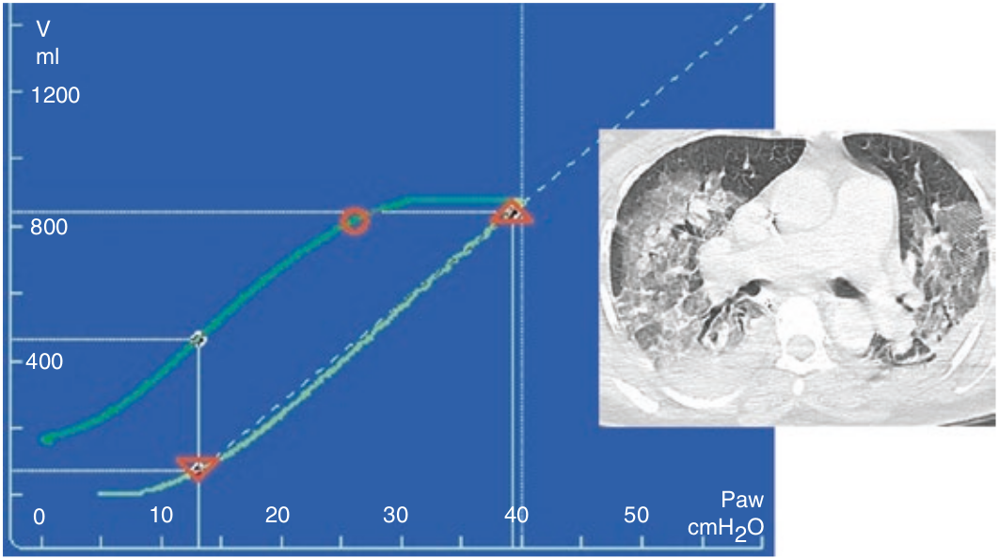

در سندرم زکر تنفسی حاد (ARDS) شکل لوپ فشار-حجم با ریه نرمال تفاوت دارد. شاخه صعودی و نزولی لوپ تغییر در شیب را نشان میدهد. یعنی کمپلیانس سیستم تنفسی در سطوح مختلف فشار تغییر می کند. همچنین میزان هیستره زیس بیشتری در لوپ مشهود است که علت آن بروز بازگشائی ریه در هنگام انبساط ریه است. بنابراین می توان از یک لوپ نیمه استاتیک برای تخمین استعداد ریه برای بازگشائی استفاده کرد و بدین وسیله تاثیر یک مانور بازگشائی را پیش بینی نمود.

لوپ فشار-حجم در ARDS به چه منظوری بکار میرود؟
۱ - تعیین مقدار مناسب PEEP
۲ - ارزیابی استعداد بازگشائی
۳ - پیش بینی تاثیر مانور بازگشائی
۴ - تعیین کمپلیانس در هر سطح فشار
۵ - همه موارد فوق بجز یک